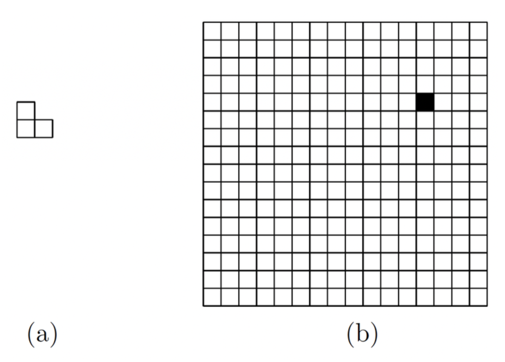

assignment #3
Given input array:
1, 0, 2, 6, 4, 5, 3, 8, 9, 7
Goal: Find the pair of points with minimum Euclidean distance in 2D.
Input: \(P=\{(x_1,y_1),(x_2,y_2),\ldots,(x_n,y_n)\}\)
Output: a pair \((p_i,p_j)\) minimizing distance
\(\displaystyle \min_{i\ne j}\sqrt{((x_i-x_j)^2+(y_i-y_j)^2})\)
Input:
P = {(2, 3), (12, 30), (40, 50), (5, 1), (12, 10)}
Output: The closest pair is \((2,3)\) and \((5,1)\).

(a) A carpet piece in one of its 4 possible orientations. (b) A \(16\times16\) floor with one covered cell.